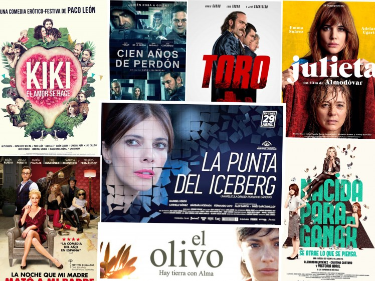

RESUMEN
Con el nombre de cine español se conoce a las producciones cinematográficas rodadas por españoles o en España. A lo largo de su historia el cine de ese país ha logrado ofrecer algunas figuras de primer nivel, entre las que destacan: Luis Buñuel, director cuya producción tuvo una gran influencia en Europa (a través de Francia) e Iberoamérica (a través de México) y Pedro Almodóvar. Pero se deben citar muchos otros nombres como Segundo de Chomón, Florián Rey, Juan Antonio Bardem, José Luis Sáenz de Heredia, Luis García Berlanga, Carlos Saura, Jesús Franco, Antonio Isasi-Isasmendi, Mario Camus, Víctor Erice, José Luis Garci, Mariano Ozores, José Luis Cuerda, Fernando Trueba, Álex de la Iglesia, Alejandro Amenábar o Juan Antonio Bayona.
Otras vertientes han obtenido menos repercusión internacional. Solo el director artístico Gil Parrondo, ganador de dos Óscar de Hollywood, y el director de fotografía Néstor Almendros (que desarrolló toda su trayectoria fuera de España) o los actores José Isbert, Paco Martínez Soria, Fernando Rey, Francisco Rabal, Fernando Fernán Gómez, Antonio Banderas y Javier Bardem y las actrices Imperio Argentina, Sara Montiel, Carmen Sevilla, Ángela Molina, Victoria Abril, Carmen Maura, Maribel Verdú y Penélope Cruz, han obtenido cierta fama mundial, generalmente por sus trabajos fuera de España.
